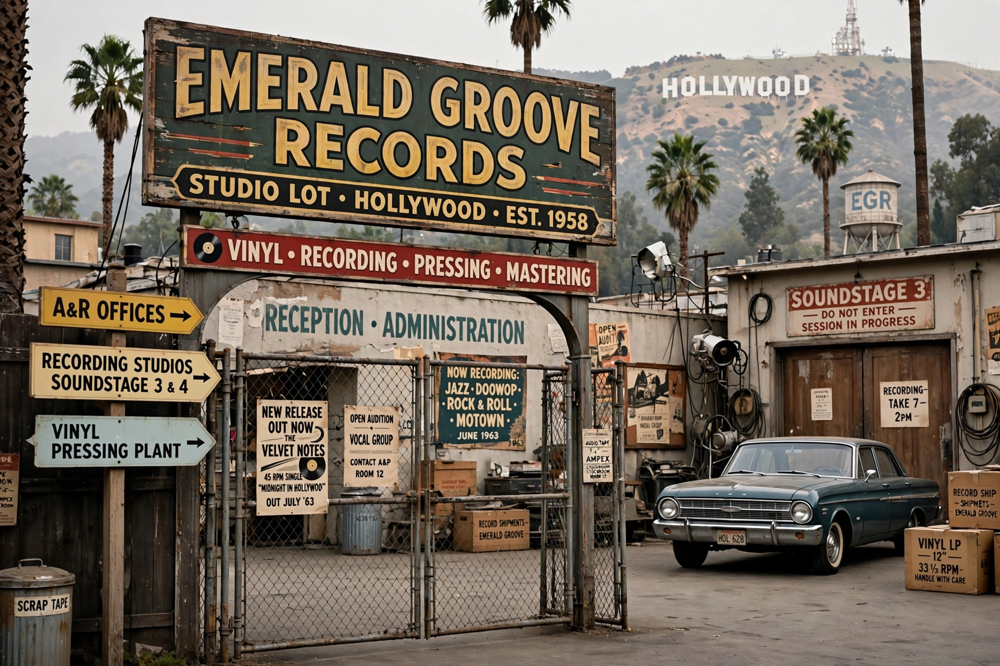

A&M Records

| Founded | 1962 |
|---|---|
| Founders | Herb Alpert and Jerry Moss |
| Defunct | 1999 (as a standalone label; brand continues) |
| Parent | Universal Music Group (Interscope Geffen A&M) |
| Headquarters | Hollywood, California, United States |
| Genre | Various |
A&M Records was an American record label founded as an independent company by Herb Alpert and Jerry Moss in 1962. The initials stand for the founders' surnames. A&M became one of the most successful independent labels in the recording industry before being acquired by PolyGram in 1989.
History
Alpert and Moss started the company with $200 in Alpert's garage, scoring an immediate hit with "The Lonely Bull" by Herb Alpert & the Tijuana Brass. From 1966 the label was based at the historic Charlie Chaplin Studios lot on La Brea Avenue in Hollywood. A&M's roster grew to include the Carpenters, Sergio Mendes, Burt Bacharach, Cat Stevens, Joe Cocker, Peter Frampton, Supertramp, the Police, Sting, Janet Jackson, Sheryl Crow, Soundgarden and Bryan Adams.
PolyGram bought A&M in 1989 for a reported $500 million, with Alpert and Moss remaining to run it until 1993. In 1998 PolyGram merged into Universal Music Group; A&M's operations were folded into Interscope Geffen A&M in 1999 and the label ceased to exist as a standalone company, though the A&M name has since been used as an imprint, including for A&M/Octone Records.
Legacy
A&M was noted for its artist-friendly reputation, its distinctive trumpet-logo branding, and a catalogue spanning easy listening, soft rock, new wave and alternative rock. Its former Hollywood lot is now home to the Jim Henson Company.
See also: AT&T · Interscope Records